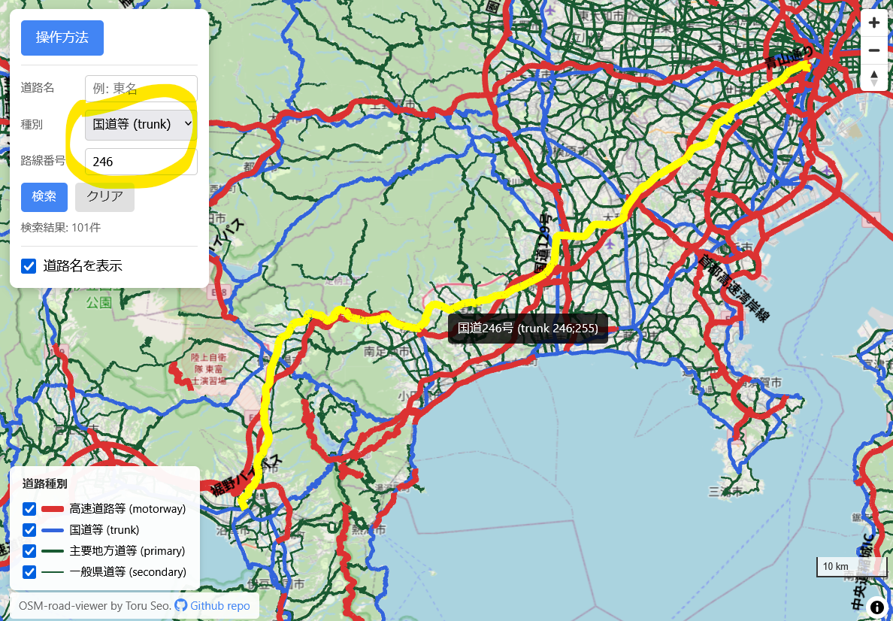
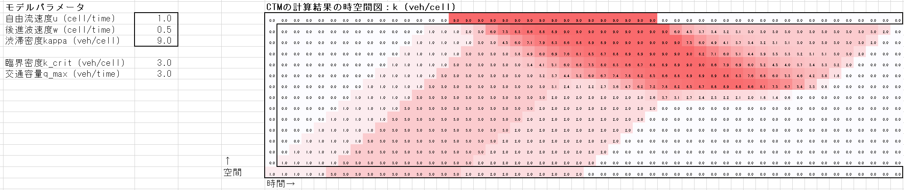
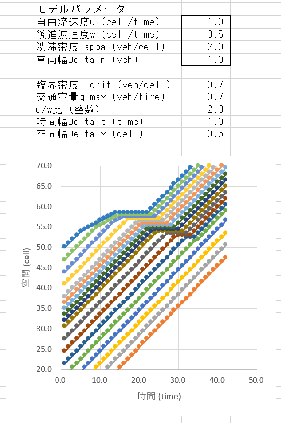

公開ソフトウェア
研究成果を積極的にオープンソースソフトウェアとして公開しています． 単にソースコードを公開するだけではなく，他の方が使いやすい形での公開を心がけています．
UXsim
Python製のオープンソース・フリーなマクロ・メソ交通流シミュレータ
UNsim
微分可能プログラミングに基づく次世代マクロ交通シミュレータ．勾配法による逆問題・最適化を実現
道路閲覧検索アプリ
日本の道路網をブラウザ上で閲覧・検索できるWebアプリケーション
交通流基礎のWebブラウザ上デモ
ボトルネックなどの交通流現象を可視化するブラウザ内インタラクティブデモ
FreeTSE
観測データから道路の交通状態を柔軟に推定するキャリブレーション不要手法
Excelで学ぶ交通シミュレーション
Kinematic Wave理論をExcel上で実装した教育目的のプログラム．授業・独学用
UXsim
Python製のオープンソース・フリーなマクロ・メソ交通流シミュレータです．これは，都市規模のような大局的な自動車交通とその渋滞を再現する交通シミュレーションであり，交通工学分野で標準的なモデルにより道路ネットワークの動的交通流を計算するものです．UXsimは単純，軽量，柔軟であるため，研究・教育上の目的に適することを意図していますが，それ以外の目的にも自由に使用可能です．詳細は以下のGitHubリポジトリを参照してください．


UNsim
Python製の微分可能交通流シミュレータです．交通工学理論のLink Transmission ModelとDynamic User Optimumに基づき，超高速なシミュレーションと自動微分が可能です．
道路閲覧検索アプリ/road-viewer-finder
日本の道路をブラウザで閲覧・検索できるWebアプリです．「あの道路どこだっけ？」みたいな疑問を検索で簡単に解消することを目的にしています．

交通流基礎のWebブラウザ上デモ
交通流の基礎をWebブラウザ上のシミュレーションを通じて簡単に学べるインタラクティブなデモです．ボトルネックの交通現象，交通状態，流率密度関係，時空間図，車両軌跡，累積図などを学べます．

FreeTSE
車両感知器とプローブカーデータに基づくキャリブレーション不要な交通状態推定ソフトです．交通流理論，交通データ，プログラミングについての専門知識がなくても容易に使えるように設計されています．Pythonモジュールとしても使えるので，技術があれば自作のプログラムに組み込むことも出来ます．


Excelで学ぶ交通シミュレーション
大規模な交通シミュレーションのための代表的な理論であるKinematic Wave理論をExcel上で実装した教育目的のプログラムです．交通工学研究会会誌『交通工学』第52巻4号の特集「マクロ交通流理論の最前線と実務への応用」に関連して作成されました．

